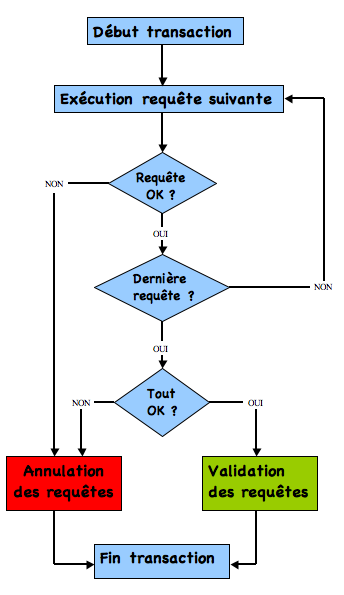

Principe
- Une transaction, c’est un ensemble de requêtes qui sont exécutées en un seul bloc
- Ainsi, si une des requêtes du bloc échoue, on peut décider d’annuler tout le bloc de requêtes (ou de quand même valider les requêtes qui ont réussi)
À quoi ça sert ?
- Imaginez que Monsieur Durant fasse un virement de 300 CHF à Monsieur Dupont via sa banque en ligne
- Il remplit toutes les petites cases du virement, puis valide
- L’application de la banque commence à traiter le virement quand soudain, une violente panne de courant provoque l’arrêt des serveurs de la banque
À quoi ça sert ?
- Deux jours plus tard, Monsieur Durant reçoit un coup de fil de Monsieur Dupont, très énervé, qui lui demande pourquoi le paiement convenu n’a toujours pas été fait
- Intrigué, Monsieur Durant va vérifier son compte, et constate qu’il a bien été débité de 300 CHF
Mais que s’est-il donc passé ?
À quoi ça sert ?
Normalement, le traitement d’un virement est plutôt simple, deux étapes suffisent :
- étape 1 : on retire le montant du virement du compte du donneur d’ordre
- étape 2 : on ajoute le montant du virement au compte du bénéficiaire
À quoi ça sert ?
- Seulement voilà, pas de chance pour Monsieur Durant, la panne de courant qui a éteint les serveurs est survenue pile entre l’étape 1 et l’étape 2
- Du coup, son compte a été débité, mais le compte de Monsieur Dupont n’a jamais été crédité
À quoi ça sert ?
- La banque de Monsieur Durant n’utilisait pas les transactions
- Si c’était le cas, la seconde requête du traitement n’ayant jamais été exécutée, la première requête n’aurait jamais été validée
Moteur InnoDB
Avec MySQL, pour que les tables soient transactionnelles, il faut les créer via le moteur InnoDB (et pas MyISAM)
Vocabulaire
- Lorsque l’on valide les requêtes d’une transaction, on dit aussi que l’on commite les changements
- À l’inverse, l’annulation des requêtes s’appelle un rollback
Comportement par défaut
- Par défaut MySQL ne travaille pas avec les transactions
- Chaque requête effectuée est directement commitée (validée)
- On ne peut pas revenir en arrière
- On peut donc en fait considérer que chaque requête constitue une transaction, qui est automatiquement commitée
- Par défaut, MySQL est donc en mode “autocommit”.
Quitter le mode autocommit
Pour quitter ce mode, il suffit de lancer la requête suivante :
Quitter le mode autocommit
- Une fois que vous n’êtes plus en autocommit, chaque modification de donnée devra être commitée pour prendre effet
- Tant que vos modifications ne sont pas validées, vous pouvez à tout moment les annuler (faire un rollback)
Valider/annuler les changements
Les commandes pour commiter et faire un rollback sont relativement faciles à retenir :
COMMIT; -- pour valider les requêtes
ROLLBACK; -- pour annuler les requêtes
Démarrer explicitement une transaction
En pratique, nous n’allons pas utiliser
Pour démarrer une transaction, il suffit de lancer la commande suivante :
MySQL et la commande SQL standard
- Avec MySQL, il est également possible de démarrer une transaction avec BEGIN ou BEGIN WORK
- Cependant, il est conseillé d’utiliser plutôt START TRANSACTION, car il s’agit de la commande SQL standard
Démarrer explicitement une transaction
- Une fois la transaction ouverte, les requêtes devront être validées pour prendre effet
- Attention au fait qu’un COMMIT ou un ROLLBACK met fin automatiquement à la transaction
- Donc les commandes suivantes seront à nouveau commitées automatiquement si une nouvelle transaction n’est pas ouverte
Exercice
Voir l’exercice “E-106_ALL01_Transactions-introduction.docx”
Commandes DDL
- Toutes les commandes qui créent, modifient, suppriment des objets dans la base de données valident implicitement les transactions
- Ces commandes forment ce qu’on appelle les requêtes DDL, pour Data Definition Langage
Commandes DDL
Cela comprend donc (parmi celles que vous connaissez) :
- la création et suppression de bases de données : CREATE DATABASE, DROP DATABASE ;
- la création, modification, suppression de tables : CREATE TABLE, ALTER TABLE, RENAME TABLE, DROP TABLE ;
- la création, modification, suppression d’index : CREATE INDEX, DROP INDEX ;
- La création, la modification et la suppression d’utilisateurs
Commandes DDL
De manière générale, tout ce qui influe sur la structure de la base de données, et non sur les données elles-mêmes
ACID
Quels sont les critères qu’un système utilisant les transactions doit respecter pour être fiable ?
ACID
Voici les 4 critères :
- A -> Atomicité
- C -> Cohérence
- I -> Isolation
- D -> Durabilité
A pour Atomicité
Une transaction doit être atomique, c’est-à-dire qu’elle doit former une entité complète et indivisible
A pour Atomicité
Si l’on reprend l’exemple du virement bancaire, en utilisant les transactions, les deux étapes :
- débit du compte donneur d’ordre
- crédit du compte bénéficiaire
ne peuvent exister indépendamment l’une de l’autre
- Si l’une est exécutée, l’autre doit l’être également
- Il s’agit d’un tout
C pour Cohérence
Les données doivent rester cohérentes dans tous les cas
C pour Cohérence
- Un virement dont seule l’étape de débit du donneur d’ordre est exécutée produit des données incohérentes
- En effet : la disparition de 300 CHF jamais arrivés chez le bénéficiaire
- Avec une transaction, cette incohérence n’apparaît jamais
- Tant que la totalité des étapes n’a pas été réalisée avec succès, les données restent dans leur état initial
I pour Isolation
Chaque transaction doit être isolée, donc ne pas interagir avec une autre transaction
D pour Durabilité
Une fois la transaction terminée, les données résultant de cette transaction doivent être stockées de manière durable, et pouvoir être récupérées, en cas de crash du serveur par exemple
Comment se déroule une transaction ?
